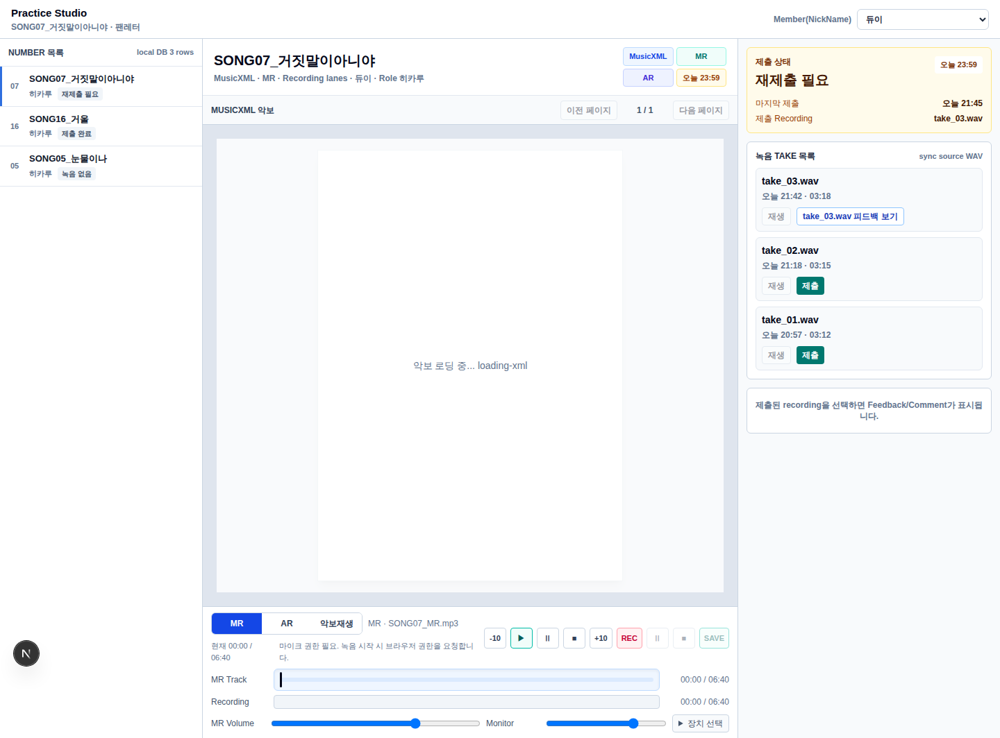

/work B형 균등 연습형 검증 결과
검증일: 2026-05-31 · 대상: http://localhost:3000/work · 도구: Playwright Chromium
요약
MusicXML SVG 렌더링, title 유지, A4 fit, B형 metadata, MR/AR seek, Recording start/ready/save, play interruption 로그 미발생을 확인했습니다.
검증 표
| MusicXML SVG | PASS · svgCount = 9 |
|---|---|
| Title | PASS · SONG07_거짓말이아니야 표시 확인 |
| B형 metadata | PASS · data-score-spacing="uniform-practice", 4, 12-16 |
| A4 fit | PASS · A4 frame 440 x 622, SVG 406 x 588 |
| Page count | PASS · 1 / 9 |
| MR seek | PASS · 00:52, audio currentTime 52 |
| AR seek | PASS · 01:03, audio currentTime 63 |
| Recording | PASS · start, WAV ready, save 확인 |
| Console | PASS · play() request was interrupted 로그 없음 |
| 참고 warning | OSMD Not enough lines for SkyBottomLine calculation, Chromium GPU ReadPixels warning은 렌더링 실패로 보지 않았습니다. |
스크린샷
2026-05-31-work-b-uniform-score.png
{kind=link}

Recording prototype 메모
브라우저 MediaRecorder가 WebM을 반환하고 decode가 멈추는 prototype 환경에서는 저장 흐름이 멈추지 않도록 silent WAV placeholder를 생성합니다. 실제 WAV recording fidelity는 다음 Supabase/Storage 연동 전 별도 작업으로 강화해야 합니다.